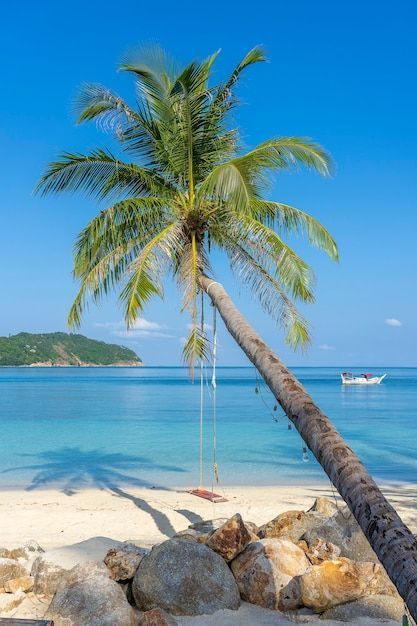

Descobrindo as prais do nordeste!
A 20 km da capital, está a Praia do Francês, um local bastante badalado e procurado pelos turistas brasileiros e estrangeiros. As praias lembram a beleza caribenha, de areias brancas e mar azul, e são excelentes para a prática do surfe.
Apesar da história triste, Porto de Galinhas é um lugar de incomparável beleza! Uma das principais atrações é visitar as galés. Basta pegar uma jangada no calçadão da praia e aproveitar a viagem tranquila de 40 minutos. Outra atração muito procurada por casais é o passeio de buggy, que sai da praia de Muro Alto e segue até o Pontal de Maracaípe.
